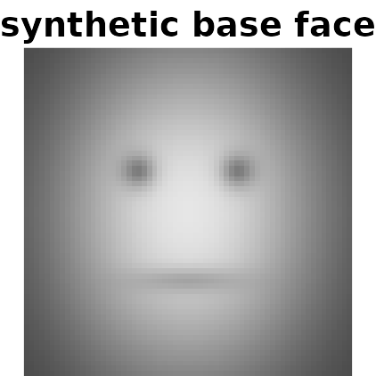
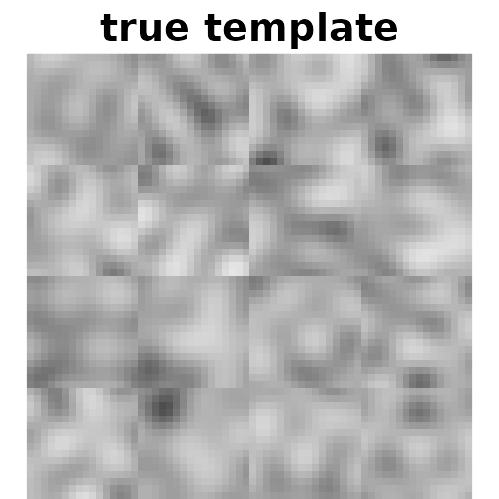
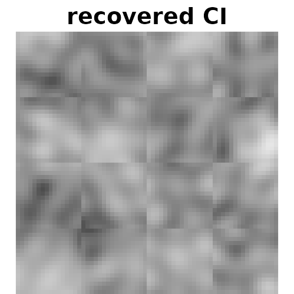
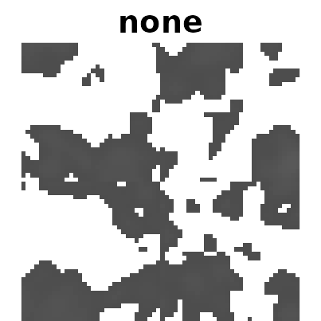
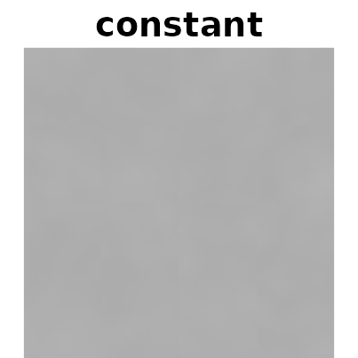
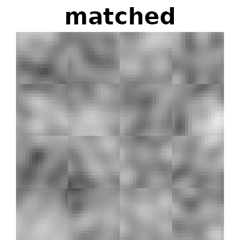
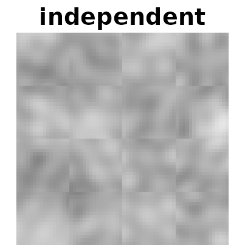
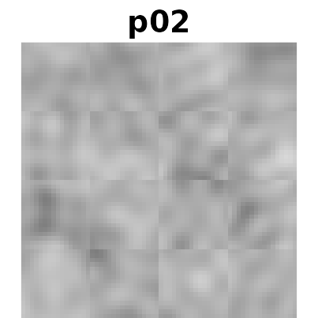
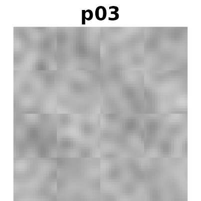
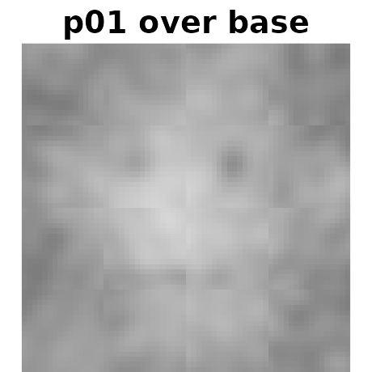

A reverse correlation walkthrough
Source:vignettes/reverse-correlation-walkthrough.Rmd
reverse-correlation-walkthrough.RmdThis is the full walkthrough: designing a 2IFC reverse correlation study, generating stimuli, computing classification images for several participants, scaling them so they can be compared, and deciding whether what you are looking at is signal or noise.
If you only want the shortest possible working example, read
vignette("getting-started", package = "rcicr") instead.
Every code chunk here runs when this vignette is built, so the code
cannot silently drift out of date as the package changes. That matters:
an earlier version of this walkthrough lived outside the package, and by
the time it was brought in, two of its lines no longer worked —
autoscale()’s argument had been renamed, and the install
instruction pointed at a branch that no longer exists.
library(rcicr)
# Graphical parameters are changed below to draw the images without margins;
# this records the originals so the last chunk can put them back.
old_par <- par(no.readonly = TRUE)One small helper, used throughout to display an image matrix:
# zlim matters more than it looks. image() stretches whatever range it is given
# across the full palette, so without a fixed zlim every linear rescaling of the
# same image renders identically -- which would make the scaling comparison
# below silently meaningless. Pass zlim = c(0, 1) whenever the point is what the
# pixel values actually are; the default just stretches to the data's own range,
# which is what you want when only the structure matters.
show <- function(m, title, zlim = range(m, na.rm = TRUE)) {
op <- par(mar = c(0, 0, 1.4, 0))
# image() takes [x, y] with y increasing upwards, so a matrix indexed
# [row, col] has to be transposed and flipped to display the right way up.
image(t(m[nrow(m):1, ]), col = gray.colors(256), axes = FALSE, asp = 1, # nolint: seq_linter.
main = title, zlim = zlim, useRaster = TRUE)
par(op)
}1. Installing
rcicr was archived on CRAN in 2021 (an undeliverable
maintainer email address, not a problem with the package), so install it
from GitHub:
# install.packages("remotes")
remotes::install_github("rdotsch/rcicr@*release") # or @v1.2.3 for one specific releaseInstall a tagged release rather than the tip of main,
and note the version in your analysis script: a classification image is
only reproducible against the version that computed it.
2. What the method does
On each trial a participant sees two images side by side. Both are the same base face, but one has random visual noise added and the other has exactly the same noise subtracted. The participant picks whichever looks more like some category — more trustworthy, more masculine, more like their own group.
Neither image contains any real signal. But if a participant reliably picks the image whose noise happens to resemble their internal idea of “trustworthy”, then averaging the noise from their chosen images — and subtracting the noise from the ones they rejected — makes that idea visible. That average is the classification image.
3. Generating stimuli
generateStimuli2IFC() needs one or more
square base images. Here we draw a crude synthetic face
so the vignette is self-contained and needs no image licence; in a real
study you would pass paths to your face photos.
n <- 64
rows <- matrix(seq(-1, 1, length.out = n), n, n)
cols <- matrix(seq(-1, 1, length.out = n), n, n, byrow = TRUE)
x <- cols
y <- -rows # row indices grow downwards, so flip to make +y point up
face <- exp(-(x^2 / 0.45 + y^2 / 0.75)) # head
face <- face - 0.55 * exp(-(((x + 0.3)^2 + (y - 0.25)^2) / 0.012)) # left eye
face <- face - 0.55 * exp(-(((x - 0.3)^2 + (y - 0.25)^2) / 0.012)) # right eye
face <- face - 0.35 * exp(-(x^2 / 0.10 + (y + 0.42)^2 / 0.006)) # mouth
face <- (face - min(face)) / (max(face) - min(face))
base_face <- tempfile(fileext = ".png")
png::writePNG(face, base_face)
show(face, "synthetic base face", zlim = c(0, 1))
The base image must be square and already the size you
want: rcicr does not resize it, and will stop with
an error if img_size disagrees.
stimulus_path <- tempfile("stimuli")
dir.create(stimulus_path)
generateStimuli2IFC(
base_face_files = list(face = base_face),
n_trials = 120,
img_size = 64,
stimulus_path = stimulus_path,
seed = 1,
nscales = 3,
ncores = 1,
save_as_png = FALSE # TRUE in a real study: this writes the actual stimuli
)
rdata_file <- list.files(stimulus_path, pattern = "\\.Rdata$", full.names = TRUE)[1]Real studies are much bigger than this. The defaults
— n_trials = 770, img_size = 512,
nscales = 5 — reflect published practice (Dotsch &
Todorov, 2012). Everything here is shrunk so the vignette builds in
seconds.
With save_as_png = TRUE you get two PNGs per trial per
base image: ..._ori.png and ..._inv.png. Those
are what you show participants.
The .Rdata file is the important output
That file records the random noise parameters behind every trial. It is the only link between stimulus generation and analysis — without it, the responses you collect are uninterpretable, because nothing else records which noise pattern trial 57 actually was.
Back it up alongside your data. Every analysis function below takes
it as rdata.
4. Collecting responses
Run the task however you like (see “Running the task online” below). What you need back, per trial, is:
- the stimulus number — which trial of the generated set was shown, and
- the response —
1if the participant chose the original,-1if they chose the inverted one.
To make this walkthrough show a real result rather than a grey smudge, we simulate three participants who genuinely have an internal template and respond according to it, with different amounts of inconsistency.
e <- new.env()
load(rdata_file, envir = e)
params <- e$stimuli_params[["face"]]
# The template is itself a noise image, so it is exactly expressible in the same
# basis the stimuli are drawn from.
set.seed(99)
template <- generateNoiseImage(rnorm(max(e$p$patchIdx)), e$p)
# Each trial's noise image, and how strongly it matches the template.
stack <- vapply(seq_len(nrow(params)),
function(i) generateNoiseImage(params[i, ], e$p),
matrix(0, 64, 64))
evidence <- apply(stack, 3, function(z) base::sum(z * template))
evidence <- evidence / sd(evidence)
# Three observers with the same template but increasing internal noise: the
# third is much less consistent than the first.
set.seed(7)
simulate <- function(internal_noise) {
ifelse(evidence + rnorm(length(evidence), 0, internal_noise) > 0, 1, -1)
}
responses <- data.frame(
participant = rep(c("p01", "p02", "p03"), each = nrow(params)),
stimulus = rep(seq_len(nrow(params)), 3),
response = c(simulate(0.5), simulate(1.5), simulate(3))
)
head(responses)
#> participant stimulus response
#> 1 p01 1 1
#> 2 p01 2 1
#> 3 p01 3 -1
#> 4 p01 4 -1
#> 5 p01 5 1
#> 6 p01 6 1Real data goes in exactly this shape: one row per trial per participant.
5. Computing one classification image
ci_p01 <- generateCI(
stimuli = responses$stimulus[responses$participant == "p01"],
responses = responses$response[responses$participant == "p01"],
baseimage = "face",
rdata = rdata_file,
save_as_png = FALSE
)
names(ci_p01)
#> [1] "ci" "scaled" "base" "combined"The returned list has four parts, and the distinction between the first two matters:
-
ci— the raw classification image. This is the data. Compute statistics from it. -
scaled—cirescaled into the 0–1 range a PNG can store. This is a display transformation; which one you pick changes how the image looks, not what it means. -
base— the base image. -
combined—scaledoverlaid onbase. This is what gets written to disk.
Did we recover the template the simulated observer was using?
show(template, "true template")
show(ci_p01$ci, "recovered CI")

With real participants you have no template to compare against — that is the entire point of the technique. Section 8 covers how to tell signal from noise when you cannot peek at the answer.
generateCI2IFC() does the same thing with an older
argument list, kept so that analysis scripts written years ago still
run. New code should use generateCI().
6. Scaling
Scaling decides what the image looks like. generateCI()
offers four methods, and the choice is a reporting decision, not a
cosmetic one.
for (method in c("none", "constant", "matched", "independent")) {
res <- generateCI(
stimuli = responses$stimulus[responses$participant == "p01"],
responses = responses$response[responses$participant == "p01"],
baseimage = "face", rdata = rdata_file, save_as_png = FALSE,
scaling = method, scaling_constant = 0.5
)
# $scaled, not $combined, so the effect of scaling is visible rather than
# hidden under the base image -- and zlim fixed to the displayable range, so
# that what you see is the actual pixel values.
show(res$scaled, method, zlim = c(0, 1))
}



Those four panels are the argument for taking scaling seriously.
none leaves the raw CI, whose values
straddle zero and span only about ±0.04. Nothing in that range is
displayable: negative pixels fall outside 0–1 entirely (shown blank
above) and positive ones are so close to zero they render as near-black.
Written to a PNG, where out-of-range values are clipped rather than
dropped, almost the whole image would be black. Scaling is not
optional.
constant with
scaling_constant = 0.5 gives a flat grey — the constant is
more than ten times the CI’s actual range, so every difference is
compressed into a sliver of the palette. A constant has to be chosen
with the data’s range in mind; too large destroys the signal just as
surely as too small clips it.
matched and
independent both use the available range
and look similar here, because the base image happens to span nearly 0–1
already. On a real photograph with a narrower range they diverge.
-
independent(default) picks, for each image separately, the smallest constant that avoids clipping. Every CI uses its full dynamic range — which means two CIs scaled this way are not comparable to each other, because each got a different constant. -
constantdivides by a fixed constant you choose, so several CIs stay on one scale. Use this, orautoscale(), when comparing conditions. -
matchedmatches the CI’s intensity range to the base image’s. Nonlinear. -
nonedoes nothing, leaving values outside 0–1 to be clipped on save.
Whichever you choose, ci$ci is untouched. Statistics
computed from it are unaffected by the display choice.
7. Several participants at once
batchGenerateCI() splits a data frame by a grouping
column and computes one CI per group.
cis <- batchGenerateCI(
data = responses,
by = "participant",
stimuli = "stimulus",
responses = "response",
baseimage = "face",
rdata = rdata_file,
save_as_png = FALSE
)
names(cis)
#> [1] "face_participant_p01" "face_participant_p02" "face_participant_p03"Use the same by mechanism for conditions rather than
participants when that is the comparison you care about.
Because each of those was scaled independently, they cannot be
compared by eye yet. autoscale() finds one constant that
works for all of them without clipping any:
scaled <- autoscale(cis, save_as_pngs = FALSE)
#> Using scaling factor constant:0.0384382346907274
for (nm in names(scaled)) {
# $scaled, not $combined -- see the note below.
show(scaled[[nm]]$scaled, sub(".*_", "", nm), zlim = c(0, 1))
}

p01 should look cleanest and p03 weakest —
they share a template but differ in how consistently they applied it,
which is what internal noise means in practice.
After autoscale(), look at $scaled
autoscale() rewrites $scaled and
deliberately leaves $combined exactly as it
was. That is by design: a combination you made before
autoscaling survives the call untouched, so an existing analysis script
that plots $combined keeps producing the same image.
It catches people out after batchGenerateCI(), though,
because that function scales with 'none' before handing
over — so its $combined is an overlay of the
unscaled noise and looks almost blank. If you want the
autoscaled noise over the base image, build it yourself:
p01 <- scaled[["face_participant_p01"]]
show((p01$scaled + p01$base) / 2, "p01 over base", zlim = c(0, 1))
That expression is exactly what
autoscale(save_as_pngs = TRUE) writes to disk.
Note also that the argument is save_as_pngs. Older
tutorials show saveasjpegs, which no longer exists —
precisely the drift that keeping this walkthrough inside the package
prevents.
8. Is there actually signal?
Two tools, answering different questions.
computeInfoVal2IFC() gives one number
per CI: a z-score for how much stronger this CI is than one built from
random responding. Values above about 1.96 indicate reliable signal.
It needs a reference distribution simulated under the same task parameters, which takes a long time to build — so it is shown but not run here:
# Slow: simulates `iter` classification images from random responses. Do this once
# per stimulus set; the result is cached back into the .Rdata file.
generateReferenceDistribution2IFC(rdata_file, iter = 10000)
computeInfoVal2IFC(target_ci = ci_p01, rdata = rdata_file)plotZmap(), or
generateCI(zmap = TRUE), answers the spatial question
instead: which regions of the image carry reliable signal.
zmap_dir <- tempfile("zmaps")
ci_z <- generateCI(
stimuli = responses$stimulus[responses$participant == "p01"],
responses = responses$response[responses$participant == "p01"],
baseimage = "face", rdata = rdata_file, save_as_png = FALSE,
zmap = TRUE, zmapmethod = "quick", threshold = 1.5,
zmaptargetpath = zmap_dir, zmapdecoration = FALSE
)
# Pixels that did not clear the threshold are set to NA.
range(ci_z$zmap, na.rm = TRUE)
#> [1] -2.208394 3.442531
mean(!is.na(ci_z$zmap)) # fraction of the image flagged
#> [1] 0.1337891Choose the threshold by looking at the range, not by
habit. zmapmethod = "quick" z-scores a blurred CI
across the pixels of that one image, so its values are relative
to the image’s own spatial structure — they are not z-scores against a
null distribution, and their spread shrinks as the image gets smaller or
the blur gets wider. Here the whole map spans roughly ±1.7, so the
default threshold = 3 would have returned an entirely blank
map. That is not evidence of no signal; it is the wrong ruler.
zmapmethod = "t.test" is the inferential counterpart: a
per-pixel t-test across trials, slower, but producing a statistic that
does mean what it looks like. Neither method corrects for multiple
comparisons across pixels, so treat both as exploratory.
9. Running the task online
rcicr generates stimuli and analyses responses; it does
not run experiments. The stimulus PNGs are ordinary image files, so any
platform that can show two images and record a choice will do —
Qualtrics, jsPsych, Gorilla, PsychoPy, or a custom page.
Two things to get right:
-
Record the stimulus number, not the filename you
happened to serve. The number is what indexes into the
.Rdatafile. -
Record which of the pair was chosen as
1(original) or-1(inverted), and be certain which is which — a systematic flip inverts every classification image you compute, and the result will look like a plausible mental representation of the opposite trait.
Worked examples and analysis scripts: https://github.com/rdotsch/rcicr_examples/
10. Citing
citation("rcicr")If you use the technique, cite the method papers as well as the
software — see the package’s CITATION file and the README
for the relevant references.